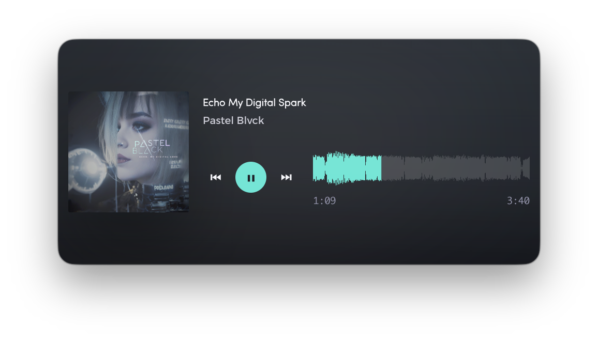
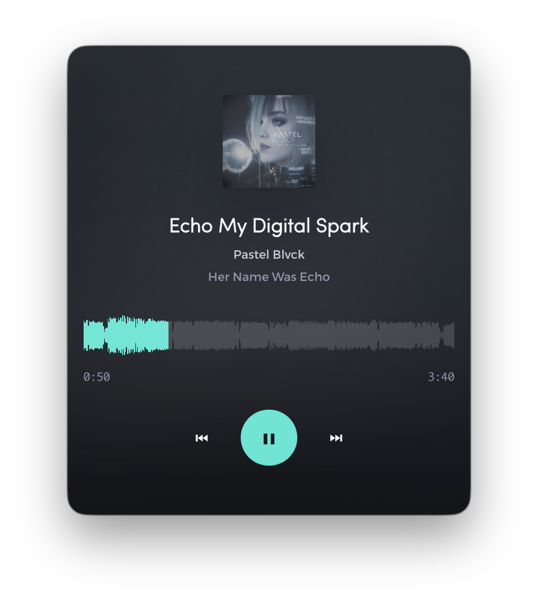
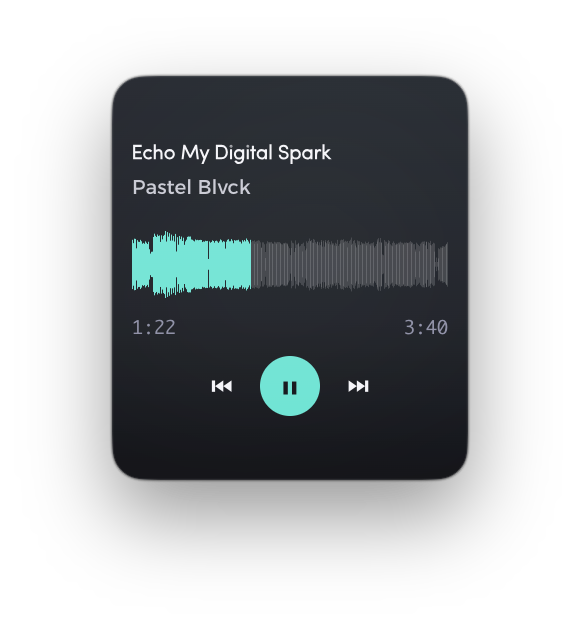
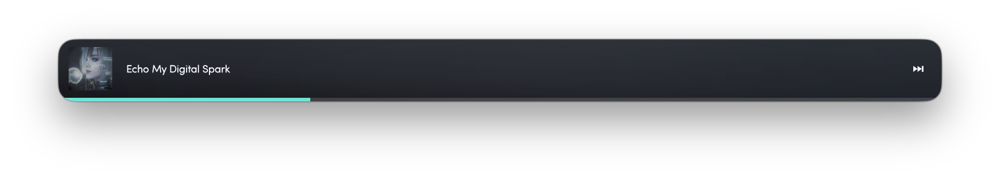
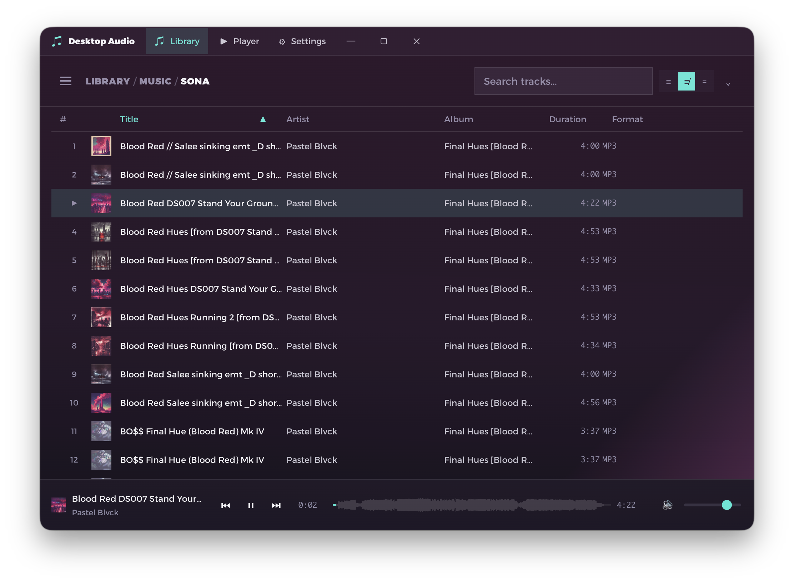

Library Management
Scan folders, browse folder trees, and search through your music collection.
Screenshots captured from the running application
Scan folders, browse folder trees, and search through your music collection.
Real-time waveform progress bars generated from audio file data.
Full MediaSession API support — play, pause, next, previous from your OS.
Draw the curve straight over the output spectrum — a real DSP chain between the file and your speakers.
Every track analysed once in the background, then cached — chord changes follow playback.
Now playing has two views — the album art, or the audio analysis — and switching between them fades the cover upward while the key, tempo and chords rise into the space it leaves.
Everything else is a layer. Lyrics step the column aside to make room. The audio processing page opens between the type and the transport, riding the title up and the controls down. Both compose, with either view and with each other — and through all of it the title, the seek bar and the transport stay exactly where they were.


Narrow the window and the cover stops being a card beside the type — it becomes the top of the page, dissolving into a gradient that the title sits inside. The rest of the layout responds the same way.

A sixteen-band equaliser, a compressor and a limiter, each switchable on its own. The equaliser is one line you draw on, laid over the sound it is shaping: the curve is the filter cascade's real response, and the filled shape underneath is the analyser — which sits after the chain, so a band you lift lifts the ground under the bump you just drew.
Bypassing a module sets neutral parameters instead of unplugging it: splicing a node in or out of a live graph shifts the sample stream in time and clicks, while a flat band and a 1:1 compressor are already transparent. Everything is a native range input underneath — the curve keeps sixteen of them for the keyboard, and each knob is one under a drawn face. Hover the curve and a ruler of the band frequencies rises under it, calling out the one beneath your pointer.
Every track is analysed once, in the background, on its own thread — chord regions, main key, tempo and a steady beat grid — then cached against the file's modification time so it never happens twice.
The chord ribbon turns distance into time: the sounding chord is pinned at the left and flashes as it takes over, the ones ahead slide in from the right exactly as far away as they are seconds away, and the outgoing one scrolls off and fades. Key and tempo sit above it. Beat and downbeat markers are drawn into the waveform. Behind all of it a live FFT wireframe names the dominant partials by pitch — on a logarithmic axis, because a linear one buries five octaves in the leftmost tenth of the screen.
While a track is being analysed you get a progress bar and an estimate learned from how long previous ones took, and whatever you are listening to is analysed first. If a file can't be read, it says so instead of spinning — and remembers.


When accent source is set to artwork, the dominant colour of the playing track's cover becomes the app accent — the play button, chord ribbon, EQ curve, and mesh stroke all shift to match. The chrome stays dark, and near-black sleeves are automatically lifted to maintain contrast.
Drag the window smaller and the player rebuilds itself around whatever room is left. The buttons go before the artwork does — a cover is the fastest way to tell what is playing, so it shrinks and stays pinned to the left rather than being dropped. The title and the progress line are the last things standing. At its smallest it's a strip of chrome that still plays your music.






Even a music library with few to no metadata looks and feels perfectly fine — tracks are organized, searchable, and browsable regardless. But when you have metadata? It feels incredible AF. Album art, artists, genres — everything snaps into place beautifully.
Free and open source — use it in your browser, download the desktop app, or browse the source.